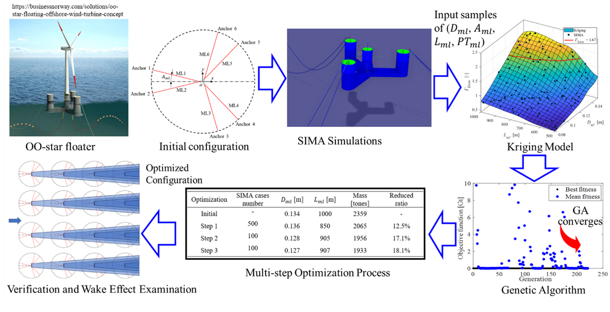

An optimization framework for mooring design of floating offshore wind turbines using a genetic algorithm based on a surrogate model

Abstract
The commercialization of floating offshore wind turbines (FOWTs) demonstrates the immense potential of the floating wind industry. However, the economic viability of the large-scale deployment of thousands of FOWTs has yet to be proven. Automatic optimization procedures for the FOWTs during the design stage are required to help reduce the costs and enhance the economic viability. In the present study, the automatic optimization procedures for mooring systems of the FOWT are investigated. A practicable and effective optimization approach to the mooring optimization of a FOWT based on its dynamic responses is proposed. These responses generated using a marine operation simulation software SIMA include maximum roll, pitch, hub accelerations, minimum tension coefficient, and touch-down length of mooring lines for both extreme and rated conditions. A Kriging model is employed as a surrogate model to deliver these dynamic responses based on the SIMA results. The mooring line configuration and mass are optimized using a genetic algorithm and the surrogate model. A multi-step optimization method is proposed to enhance the training accuracy of the Kriging model and significantly decrease computational efforts in SIMA simulations. This method involves reducing the number of design variables and adjusting their ranges across three optimization steps. The three optimization steps demonstrate significant reductions in the mooring line mass by 12.5 %, 17.1 % and 18.0 % respectively compared to the initial configuration, suggesting the effectiveness of the present optimization approach. The dynamic analysis of a floating wind farm indicates these optimization results based on a single wind turbine for the mooring system are conservative for downwind FOWTs due to the wake effects between turbines. Consequently, this study provides a foundational framework for the mooring optimization of FOWTs, which can be further developed to address more complex optimization problems.
Read the published article ↗